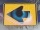

|
| Übersicht |
Einzeln lernen – Die Wort-für-Wort-Wiederholung!
Einzeln lernen – Die Wort-für-Wort-Wiederholung!
Mit dieser Übung können Sie den Inhalt einer Lektion Wort für Wort wiederholen. Gedacht ist diese Übung für alle, die eine Lektion nochmals durcharbeiten möchten und dabei jedes Wort hören, lesen und nachsprechen wollen.
Ihre Arbeit mit dieser Übung könnte so aussehen:
Als ersten empfehlen wir Ihnen, die Tonausgabe auf "Automatischer Ton" einzustellen. Ab jetzt wird Ihnen jedes Wort auch vorgesprochen.
 |
Ein Schritt nach vorne! Sobald Sie auf dieses Symbol klicken, beginnt Ihr Training. Sie sehen jetzt ein Wort auf Deutsch und müssen sich die Übersetzung in die Fremdsprache überlegen. |
 |
Lösung anzeigen! Bitte klicken Sie als nächstes auf das Symbol mit dem Auge. Die Übersetzung erscheint. Gleichzeitig wird Ihnen das Wort vorgesprochen. (Aber nur wenn Sie die Tonausgabe zuvor auf "Automatischer Ton" gesetzt haben.) |
Und das bedeuten die übrigen Symbole:
 |
Vorhergegangene Abfrage mit Lösung anzeigen!
Wenn Sie das letzte Wort mit seiner Übersetzung nochmal sehen wollen, klicken Sie bitte auf dieses Symbol. |
 |
Nächste Abfrage mit Lösung anzeigen! Wenn Sie die nächste Abfrage mitsamt der Lösung aufrufen wollen, dann drücken Sie bitte auf diesen Knopf. |
 |
Ein Schritt nach hinten! Mit diesem Symbol wechseln Sie zur vorhergegangenen Abfrage zurück. Allerdings wird Ihnen hier die Übersetzung nicht angezeigt. |
 |
Sprache wechseln, bitte! Mit diesem Symbol können Sie die Ausgangs- und Zielsprache Ihrer Abfragen festlegen bzw. vertauschen. Mit einem Klick wechseln Sie zum Beispiel von der Abfrage der Fremdsprache zur Abfrage der deutschen Übersetzung. |
 |
Ausdrucken, bitte! Über dieses Symbol kommen Sie zu den Karteikärtchen dieser Lektion. Hier können Sie sich Karteikärtchen drucken, ausschneiden und einfach in die Tasche stecken – zum Lernen unterwegs. |
 |
Anhören, bitte! Wenn Sie auf das Lautsprechersymbol klicken, öffnet sich ein Audio-Programm auf Ihrem Rechner und Sie werden hören, was Sie gerade lesen. |